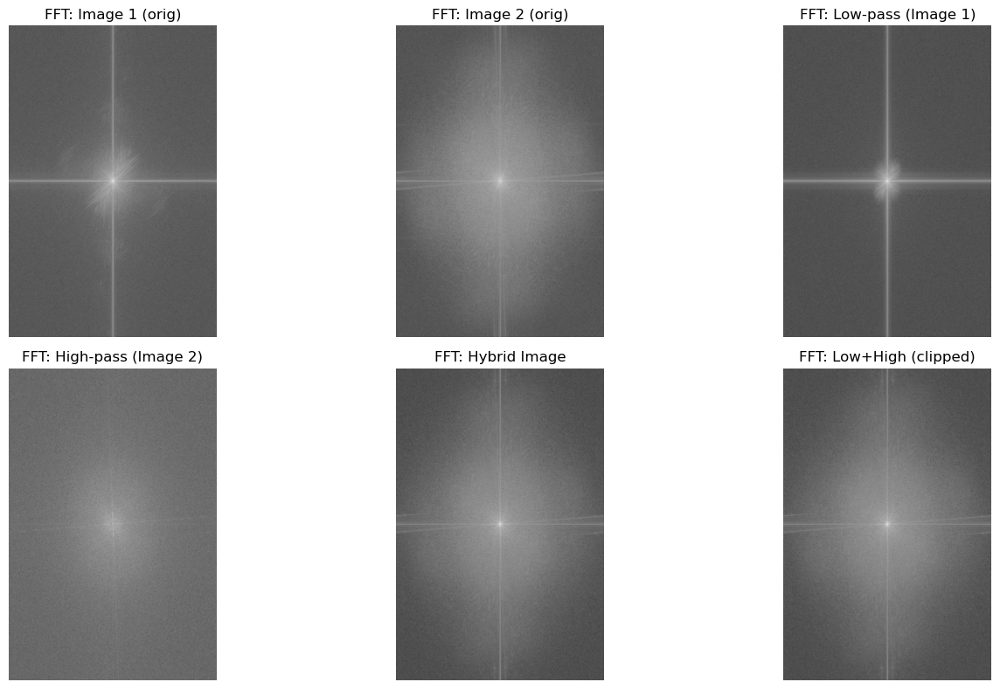

Project 0
Becoming Friends with Your Camera
Part 1: Selfie: The Wrong Way vs. The Right Way
Close-up Photo

Distant Photo
Part 2: Architectural Perspective Compression
Zoomed In Photo

Walked Closer Photo

Part 3: The Dolly Zoom
Dolly Zoom Effect

Project 1: Images of the Russian Empire
Introduction
In the early 1900s, Sergei Mikhailovich Prokudin-Gorskii pioneered color photography across the Russian Empire, capturing thousands of images with a three-filter RGB process. His glass plate negatives, later digitized by the Library of Congress, preserve a vivid record of Imperial Russia.
Part 1: Single Scale Alignment
The simplest approach to this problem is to use an extensive search method. To do so, all possible shifts are tried within a certain window_size, which I set to 15 pixels horizontally and vertically. All of these shifts were evaluated on either the L2 Norm or the Normalized Cross-Correlation (NCC) metric, and whichever displacement minimized/maximized the specific metric was used. Both methods were similarly useful in identifying the best displacement to use, but I have only shown the results for NCC here.
An issue I encountered was the borders on the image being variant. In order to solve this, I trimmed the border of each image by 50 pixels on all sides. This helped to ensure that the alignment process focused on the central features of the images rather than being skewed by border artifacts. This number was determined through trial and error.
Below are results using the basic alignment method.
cathedral.jpg

Red: (7, 1)
Blue: (-5, -2)
monastery.jpg
Red: (6, 1)
Blue: (3, -2)
tobolsk.jpg

Red: (4, 1)
Blue: (-3, -3)
Part 2: Image Pyramid Speedup
The method above works well for small images. However, when the image size becomes very large, this exhaustive search can take a very long time.
In order to solve this problem, we implement an image pyramid, where we create smaller versions of the image at multiple scales. We start by aligning the smallest images in the pyramid, which is computationally cheaper.
The displacement found at this level is then used as a starting point for aligning the next larger images, refining the search within a smaller window around the initial estimate. This process continues up the pyramid until we reach the original image size.
Many parameters were tuned in order to get the best results. The number of levels in the pyramid was set a variable amount, where the smallest image had a size of around 300 pixels. At each level, the image was downsampled by a factor of 3. The window size for the exhaustive search
at the level where the image size was the smallest was set to a larger value, as I felt that more exploration was needed at very small sizes. For every other level, the window size was very small to keep the runtime low. The same NCC metric was used for evaluating shifts at each level.
Below are the image results using the image pyramid speedup method.
cathedral.jpg

Red: (7, 1)
Blue: (-5, -2)
monastery.jpg
Red: (6, 1)
Blue: (3, -2)
tobolsk.jpg
Red: (4, 1)
Blue: (-3, -3)
church.tif

Red: (33, -8)
Blue: (-25, -4)
emir.tif

Red: (57, 17)
Blue: (-49, -24)
harvesters.tif
Red: (65, -3)
Blue: (-59, -17)
icon.tif
Red: (48, 5)
Blue: (-41, -17)
italil.tif
Red: (38, 15)
Blue: (-38, -21)
lastochikino.tif

Red: (78, -7)
Blue: (2, 2)
lugano.tif

Red: (52, -13)
Blue: (-41, 16)
melons.tif
Red: (96, 3)
Blue: (-81, -10)
self_portrait.tif
Red: (98, 8)
Blue: (-78, -29)
siren.tif
Red: (47, -19)
Blue: (-49, 6)
three_generations.tif
Red: (59, -3)
Blue: (-52, -13)
My Chosen Images
Below are three images I selected. The same parameters from above were used again.
sunset.tif
Red: (0, 46)
Blue: (0, 0)
gate.tif

Red: (62, 4)
Blue: (-26, -8)
mountain.tif

Red: (52, -13)
Blue: (-41, 16)
Project 2: Convolutions & Filters
Part 1: Fun with Filters!
Part 1.1: Convolutions from Scratch
I implemented convolution from scratch with four for loops and two for loops. I also implemented padding with zero-fill values. I compared my result with the built-in scipy.signal.convolve2d. I took a picture of myself (read as grayscale), applied a 9x9 box filter, and convolved with finite difference operators D_x and D_y.
All of the implementations yielded output images that looked identical to each other. The only difference was that the four loop implementation took 8 times longer to run than the two loop implementation. The scipy implementation was faster than both the two loop and four loop implementations.
Results
Original
Box 9x9

∂I/∂x

∂I/∂y

Code snippets
D_x = np.array([[ -1, 0, 1 ]], dtype=np.float64)
D_y = D_x.T
def padding(img: np.ndarray, pad_y: int, pad_x: int, value: float = 0.0) -> np.ndarray:
return np.pad(img, ((pad_y, pad_y), (pad_x, pad_x)), mode="constant", constant_values=value)
def convolution_4_loops(img: np.ndarray, kernel: np.ndarray) -> np.ndarray:
k = np.flipud(np.fliplr(kernel))
pad_y, pad_x = kernel.shape[0] // 2, kernel.shape[1] // 2
padded = padding(img, pad_y, pad_x, 0.0)
conv_img = np.zeros_like(img, dtype=np.float64)
for i in range(img.shape[0]):
for j in range(img.shape[1]):
acc = 0.0
for h in range(kernel.shape[0]):
for w in range(kernel.shape[1]):
acc += padded[i+h, j+w] * k[h, w]
conv_img[i, j] = acc
return conv_img
def convolution_2_loops(img: np.ndarray, kernel: np.ndarray) -> np.ndarray:
k = np.flipud(np.fliplr(kernel))
pad_y, pad_x = kernel.shape[0] // 2, kernel.shape[1] // 2
padded = padding(img, pad_y, pad_x, 0.0)
conv_img = np.zeros_like(img, dtype=np.float64)
for i in range(img.shape[0]):
for j in range(img.shape[1]):
region = padded[i:i+kernel.shape[0], j:j+kernel.shape[1]]
conv_img[i, j] = np.sum(region * k)
return conv_img
def box_filter(size: int) -> np.ndarray:
return np.ones((size, size), dtype=np.float64) / (size * size)
Part 1.2: Finite Difference Operator
I computed the partial derivatives in x and y of the cameraman image by convolving with D_x and D_y. I computed the gradient magnitude and a binarized edge image (choose an appropriate threshold qualitatively). I used scipy.signal.convolve2d for this part.
Results (Cameraman)
∂I/∂x (D_x)
∂I/∂y (D_y)
Gradient magnitude

Edge map (thresholded)
Code snippets
D_x = np.array([[ -1, 0, 1 ]], dtype=np.float64)
D_y = D_x.T
img = cv2.imread("cameraman.png", cv2.IMREAD_GRAYSCALE).astype(np.float64) / 255.0
img_x = convolve2d(img, D_x, mode="same", boundary="symm")
img_y = convolve2d(img, D_y, mode="same", boundary="symm")
grad_mag = np.hypot(img_x, img_y)
thresh = np.percentile(grad_mag, 94)
edges = grad_mag > threshPart 1.3: Derivative of Gaussian (DoG)
In the previous part, we saw that using only the difference operator to compute image gradients resulted in rather noisy outputs. To address this, I first smoothed the original image by convolving it with a Gaussian filter G (created by taking the outer product of a 1D Gaussian from cv2.getGaussianKernel() with its transpose). After blurring, I repeated the gradient computation as before by convolving the smoothed image with D_x and D_y to get the partial derivatives. The resulting gradients and edge maps are noticeably less noisy and the edges are more continuous compared to the unsmoothed version.
Next, instead of two separate convolutions (Gaussian smoothing then derivative), I created Derivative of Gaussian (DoG) filters by convolving the Gaussian filter with D_x and D_y to produce DoG_x and DoG_y. I then applied these DoG filters directly to the original image in a single convolution step. The results from this single-step DoG approach matched the two-step (smooth then differentiate) results, confirming their equivalence.
Below, I show visualizations of the DoG filters, as well as the resulting gradients, gradient magnitude, and edge maps. Smoothing with the Gaussian filter significantly reduces noise and produces cleaner, more meaningful edge detections compared to using the difference operator alone.
DoG Filters & Results
DoG filter (visual x)

DoG filter (visual y)

DoG ∗ D_x (result)
DoG ∗ D_y (result)

Gradient magnitude (DoG)
Edge Map

Code snippets
img = cv2.imread("cameraman.png", cv2.IMREAD_GRAYSCALE)
ksize = 9
sigma = 2.0
g1d = cv2.getGaussianKernel(ksize, sigma)
G = g1d @ g1d.T
blur = convolve2d(img, G, mode="same")
img_x = convolve2d(blur, D_x, mode="same")
img_y = convolve2d(blur, D_y, mode="same")
grad_mag = np.sqrt(img_x**2 + img_y**2)
DoGx = convolve2d(G, D_x, mode="full")
DoGy = convolve2d(G, D_y, mode="full")
img_x_dog = convolve2d(img, DoGx, mode="same")
img_y_dog = convolve2d(img, DoGy, mode="same")
grad_mag_dog = np.sqrt(img_x_dog**2 + img_y_dog**2)
thresh = 25
edges = (grad_mag_dog > thresh).astype(np.uint8) * 255
Part 2: Fun with Frequencies!
Part 2.1: Image "Sharpening" (Unsharp Mask)
The unsharp mask filter is a classic image sharpening technique that enhances edges and fine details. It works by first applying a blur filter (typically a Gaussian blur) to the original image, which removes high-frequency content (fine details and edges). The blurred image is then subtracted from the original, isolating the high-frequency components. These high frequencies are scaled by a sharpening amount (sometimes called "alpha" or "amount") and added back to the original image, resulting in a sharpened effect.
Mathematically, the process is:
Sharpened = Original + amount × (Original - Blurred)
How it works:
- Blurred image: Contains only the low-frequency (smooth) parts of the image.
- High-frequency image: The difference between the original and blurred image, highlighting edges and fine details.
- Sharpened image: The original image plus a scaled version of the high frequencies, making edges and details more prominent.
Below, I show the blurred, high-frequency, and sharpened versions of the Taj Mahal image, as well as others. A higher amount increases the sharpness and edge contrast, while a lower amount gives a subtler effect.
Original / Blurred / Sharpened Taj
Original / Blurred / Sharpened Leela (my dog!)

Original / Blurred / Sharpened Trees
Original / Blurred / Sharpened Campanile

Part 2.2: Hybrid Images
I created hybrid images by combining the low-frequency part of one image with the high-frequency part of another (Oliva et al., SIGGRAPH 2006). I aligned the images, chose cutoff frequencies, and showed the hybrid result (view near and far). I also showed Fourier magnitude visualizations.
I choose the cutoff frequencies by visualizing the Fourier magnitude visualizations and choosing the frequencies that are most visible in the hybrid image.
Derek & Cat
FFT Magnitude Visualization
Filters

Me & Koala

Aditi & Lion
Part 2.3: Gaussian and Laplacian Stacks
I implemented Gaussian and Laplacian stacks (stacks, not pyramids) by repeated blurring with no downsampling. I visualized the stacks for the Oraple example and reproduced the reference figure. I tuned the parameters to get the best results.
Apple and Orange Laplacian Stacks with Half-and-Half Blending

Part 2.4: Multiresolution Blending (the Oraple)
I blended two images using multiresolution blending (Burt & Adelson). I used stacks and a Gaussian stack for masks to smooth seams. I showed the apple/orange example and other creative blends: a desert and beach, and a galaxy and an eyeball. I tuned the parameters to get the best results.
Oraple: Inputs / Blended

Galaxy/Eyeball: Mask / Inputs / Blended

Galaxy/Eyeball: Laplacian Stack Visualization
Ocean/Sky: Inputs / Blended

Beach/Desert: Inputs / Blended

Project 3: Image Mosaics
Project 3A: Manual Feature Selection
A.1: Shoot the Pictures
Image Set 1: Campus Panorama
Image 1

Image 2

Image Set 2: EyeRobot
Image 1

Image 2

Image Set 3: Golden Gate Panorama
Image 1

Image 2

A.2: Recover Homographies
Point Correspondences
Image with correspondences

System of Equations and Homography Matrix
System of equations matrix A:
[[ 4.44000e+02 6.70000e+02 1.00000e+00 0.00000e+00 0.00000e+00
0.00000e+00 -6.34920e+04 -9.58100e+04]
[ 0.00000e+00 0.00000e+00 0.00000e+00 4.44000e+02 6.70000e+02
1.00000e+00 -3.05916e+05 -4.61630e+05]
[ 4.47000e+02 8.30000e+02 1.00000e+00 0.00000e+00 0.00000e+00
0.00000e+00 -6.79440e+04 -1.26160e+05]
[ 0.00000e+00 0.00000e+00 0.00000e+00 4.47000e+02 8.30000e+02
1.00000e+00 -3.87549e+05 -7.19610e+05]
[ 9.19000e+02 8.52000e+02 1.00000e+00 0.00000e+00 0.00000e+00
0.00000e+00 -6.18487e+05 -5.73396e+05]
[ 0.00000e+00 0.00000e+00 0.00000e+00 9.19000e+02 8.52000e+02
1.00000e+00 -7.79312e+05 -7.22496e+05]
[ 9.26000e+02 6.56000e+02 1.00000e+00 0.00000e+00 0.00000e+00
0.00000e+00 -6.29680e+05 -4.46080e+05]
[ 0.00000e+00 0.00000e+00 0.00000e+00 9.26000e+02 6.56000e+02
1.00000e+00 -6.06530e+05 -4.29680e+05]
[ 1.09900e+03 2.96000e+02 1.00000e+00 0.00000e+00 0.00000e+00
0.00000e+00 -9.14368e+05 -2.46272e+05]
[ 0.00000e+00 0.00000e+00 0.00000e+00 1.09900e+03 2.96000e+02
1.00000e+00 -3.38492e+05 -9.11680e+04]]
System of equations vector b:
[143. 689. 152. 867. 673. 848. 680. 655. 832. 308.]
Recovered homography matrix H:
[[ 1.53475583e+00 3.85902375e-02 -5.39627258e+02]
[ 1.86219975e-01 1.33254933e+00 -1.70278458e+02]
[ 3.50233197e-04 2.13277090e-05 1.00000000e+00]]A.3: Warp the Images (Hang In There!)
Interpolation Methods Comparison (Image 1)
Original Image 1

Nearest Neighbor
Bilinear Interpolation
Interpolation Methods Comparison (Image 2)
Original Image 2

Nearest Neighbor
Bilinear Interpolation
Discussion: Comparing Interpolation Methods
In both of the methods, there did not seem to be a difference in the results between nearest neighbor and bilinear interpolation. The results were the same. TODO: third image
A.4: Blend the Images into a Mosaic
Mosaic 1: Campus Panorama
Source Images

Final Mosaic

Mosaic 2: EyeRobot
Source Images

Final Mosaic

Mosaic 3: Golden Gate Panorama
Source Images

Final Mosaic

Blending Procedure Explanation
To blend the images into a mosaic, I first warped each image into the mosaic coordinate frame using the computed homographies. For each warped image, I also generated an alpha mask indicating the valid (non-background) regions. The final mosaic was created by taking a weighted average of the pixel values from all warped images at each location, using the corresponding alpha masks as weights. This approach ensures smooth transitions and seamless blending in the overlapping regions.
Project 3B: Automatic Feature Detection
B.1: Harris Corner Detection
I implemented the Harris corner detection algorithm to automatically identify key points in images. This includes both basic Harris corner detection and Adaptive Non-Maximal Suppression (ANMS) for selecting the best corners. To do this, I first computed the Harris response for each pixel by convolving the image with a Gaussian kernel, then calculating image gradients in both x and y directions. The Harris response was calculated as the determinant of the gradient covariance matrix. I then applied Adaptive Non-Maximal Suppression (ANMS) to select the best corners from the Harris responses.
Harris Corners Detection
Original Image
Harris Corners

After ANMS

B.2: Feature Descriptor Extraction
I extracted feature descriptors from the corners detected in the previous step. To do this, I first extracted a 40x40 patch around the corner, then blurred it using a Gaussian kernel. I then extracted an 8x8 descriptor from the blurred patch. The descriptor is bias/gain-normalized for robust matching.
Sample Extracted Features

B.3: Feature Matching
Then, matches are found between the features in the two images using the Euclidean distance and Lowe's ratio test. Using the features extracted in the previous step, I found matches between the features in the two images. The ratio test helps eliminate ambiguous matches by comparing the distance to the nearest neighbor with the distance to the second nearest neighbor. The ratio test is defined as the ratio of the distance to the nearest neighbor to the distance to the second nearest neighbor. If the ratio is less than a threshold, the match is accepted.
Feature Matches Between Image Pairs


B.4: RANSAC for Robust Homography
I implemented the 4-point RANSAC algorithm to compute robust homography estimates that can handle outliers in feature correspondences.
To do this, I first randomly sampled 4 points from the source and destination feature correspondences. I then computed the homography from the 4 points. I then counted the inliers that were within a threshold of the computed homography. I then repeated this process for a set number of iterations. The best homography is the one with the most inliers.
The inliers are the points that are within a distance threshold of the computed homography. I then used the best homography to warp the source image to the destination image.
I compare the manual vs automatic stitching results.
It is clear that the automatic stitching results are much better than the manual stitching results. The automatic stitching results are much more seamless and have less artifacts. The manual stitching results are more jagged and have more artifacts. This is especially noticable in this image near the lights at the top, as the automatic one is much less blurred than the manual one.
Manual vs Automatic Stitching Comparison
Manual Stitching
Automatic Stitching

Automatic Mosaics
Campus Panorama

EyeRobot
Golden Gate Panorama

Project 4: Neural Radiance Fields (NeRF)
Introduction
In this project, I implement Neural Radiance Fields (NeRF) to synthesize novel views of 3D scenes from multi-view images.
NeRF represents scenes as continuous volumetric functions using neural networks, enabling photorealistic rendering from arbitrary viewpoints.
Part 0: Camera Calibration and 3D Scanning
I calibrated my camera using ArUco tags and captured 3D object scans. The calibration process involved:
- Capturing 30-50 images of ArUco tags from different viewpoints
- Estimating camera intrinsic parameters and distortion coefficients
- Scanning a 3D object with a single ArUco tag visible
- Using PnP (Perspective-n-Point) to estimate camera poses
- Undistorting images for the NeRF dataset
Camera Pose Visualizations
Camera Frustum Visualization 1

Camera Frustum Visualization 2

Part 1: Fit a Neural Field to a 2D Image
I implemented a Multi-Layer Perceptron (MLP) with sinusoidal positional encoding to represent a 2D image as a neural field.
The network learns to map 2D pixel coordinates to RGB color values.
Implementation Details:
- Positional Encoding with L=10 frequency bands for input coordinates
- Random pixel sampling dataloader (batch size: 10,000 pixels)
- MSE loss with Adam optimizer (learning rate: 1e-2)
- Training for 1000-3000 iterations
- PSNR (Peak Signal-to-Noise Ratio) for quality evaluation
Model Architecture
NeuralField2D Architecture:
- Input: 2D pixel coordinates (x, y) normalized to [0, 1]
- Positional Encoding:
- Input dimension: 2
- Max frequency log2 (L): 10
- Output dimension: 42 (2 + 2 × 10 × 2)
- Encodes coordinates using sin/cos at frequencies 2⁰, 2¹, ..., 2⁹
- MLP Network:
- 3 hidden layers, each with 256 neurons
- Activation: ReLU for hidden layers
- Output layer: Linear(256 → 3) with Sigmoid activation
- Total parameters: ~143,363 (with L=10, hidden_dim=256)
- Output: 3 channels (RGB) in range [0, 1]
Training Configuration:
- Optimizer: Adam
- Learning rate: 1e-2
- Loss function: MSE (Mean Squared Error)
- Batch size: 10,000 pixels (randomly sampled)
- Training iterations: 1,000-3,000
- Evaluation metric: PSNR (Peak Signal-to-Noise Ratio)
Training Progression
Training on Provided Image

Training on My Own Image

Hyperparameter Exploration: PE Frequency & Network Width
2×2 Grid: PE Frequencies vs Network Widths

PSNR Curve
PSNR over Training Iterations

Part 2: Neural Radiance Field from Multi-view Images
I implemented a full Neural Radiance Field (NeRF) to synthesize novel views from multi-view images.
This involves ray generation, point sampling along rays, a deeper MLP network, and volume rendering.
Part 2.1-2.3: Coordinate Transforms and Ray Sampling
Implementation:
- Camera-to-world coordinate transformation
- Pixel-to-camera coordinate mapping
- Pixel-to-ray direction computation
- Batched operations for efficiency (NumPy or PyTorch)
- Ray sampling from multiple viewpoints
- Point sampling along rays with stratified sampling (near=2.0, far=6.0, n_samples=32-64)
Ray Visualization 1

Ray Visualization 2

Part 2.4: NeRF Network Architecture
Network Design:
- Deeper MLP compared to Part 1
- Inputs: 3D coordinates (PE-encoded) + ray direction (PE-encoded)
- Outputs: Volume density σ (ReLU activation) + RGB color (Sigmoid activation)
- Skip connections via input injection at intermediate layers
Detailed Architecture Specifications:
- Positional Encoding:
- Position encoding: L=10 frequency bands (pos_L=10)
- Direction encoding: L=4 frequency bands (dir_L=4)
- Position input dimension: 3D coordinates → 3 × (2×10 + 1) = 63 dimensions
- Direction input dimension: 3D direction → 3 × (2×4 + 1) = 27 dimensions
- Encoding formula: [x, sin(2⁰πx), cos(2⁰πx), ..., sin(2^(L-1)πx), cos(2^(L-1)πx)]
- MLP Architecture:
- Total layers: 8 hidden layers
- Hidden dimension: 256 neurons per layer
- Activation: ReLU for all hidden layers
- Network structure:
- First half (layers1): 4 layers processing position encoding
- Input: 63D (position encoding)
- Layers: Linear(63 → 256), Linear(256 → 256), Linear(256 → 256), Linear(256 → 256)
- Skip connection: Position encoding concatenated after first 4 layers
- Second half (layers2): 4 layers processing concatenated features
- Input: 256 + 63 = 319D (features + position encoding)
- First layer: Linear(319 → 256)
- Remaining layers: Linear(256 → 256) × 3
- First half (layers1): 4 layers processing position encoding
- Output Heads:
- Density head: Linear(256 → 1) with Softplus activation
- Output: Volume density σ (ensures positive values)
- Bias initialized to 0.1, then shifted by -1.0 for sparser initialization
- Feature layer: Linear(256 → 256) for color conditioning
- Color head: 2-layer MLP conditioned on view direction
- Input: 256 (features) + 27 (direction encoding) = 283D
- Layer 1: Linear(283 → 128) + ReLU
- Layer 2: Linear(128 → 3) + Sigmoid
- Output: RGB color values in [0, 1]
- Density head: Linear(256 → 1) with Softplus activation
- Key Features:
- Skip connection at layer 4: Injects position encoding to help network learn high-frequency details
- View-dependent color: RGB prediction conditioned on viewing direction
- Separate density and color prediction: Density is view-independent, color is view-dependent
Part 2.5: Volume Rendering
Implementation:
- Discrete volume rendering equation using PyTorch
- Alpha compositing along rays
- Validation test passed
- Training configuration: learning rate 5e-4, batch size 10k rays, 1000 steps
- Target PSNR: 23+ on validation set
Training Progression: Predicted Images Across Iterations

Validation PSNR Curve

Spherical Rendering Video: Lego Scene

Part 2.6: Train on Custom Data
Custom Dataset:
-
I faced a lot of issues when trying to get the Android dataset to work. I had to retake the images several times in order to end up with a good dataset. I also heavily tuned the near/far parameters to finally end up with one that worked.
I also had to resize all of the large calibration and object images to be the same size as that messed up the calibration process initially, after which I downsampled the images to 200x200 pixels to speed up the training process and also scaled
down the intrinsics accordingly.
Novel View Synthesis: Camera Orbit Animation

Training Loss Plot

Intermediate Renders During Training
Iteration 0

Iteration 200

Iteration 400

Iteration 600

Iteration 800

Iteration 1000

Iteration 1200

Iteration 1400

Iteration 1600

Iteration 1800

Iteration 2000